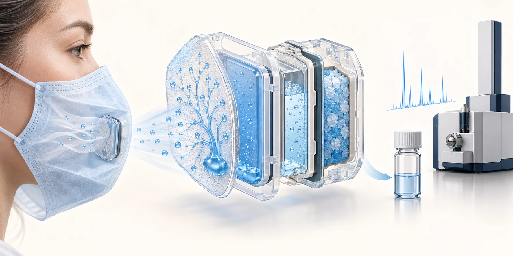
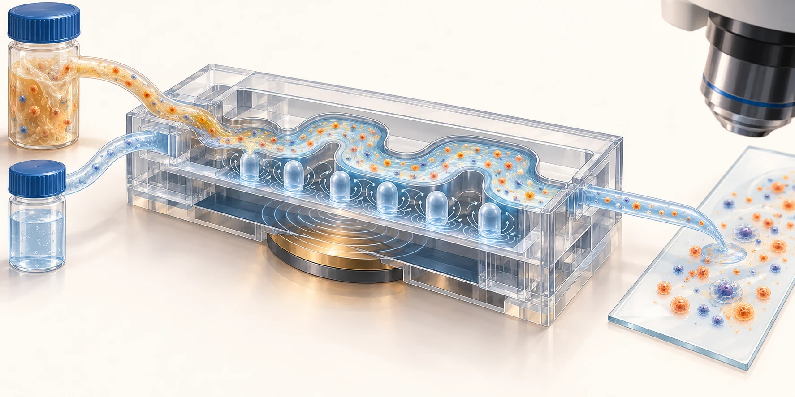
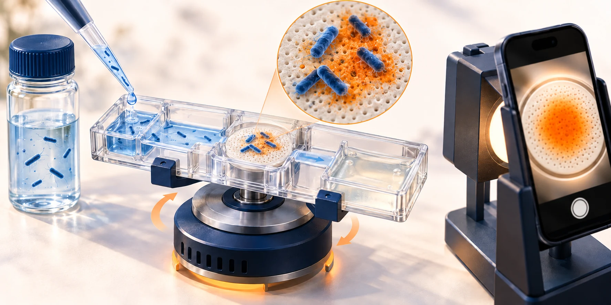
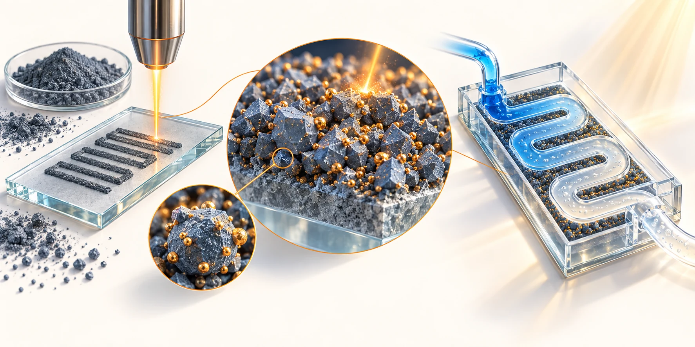
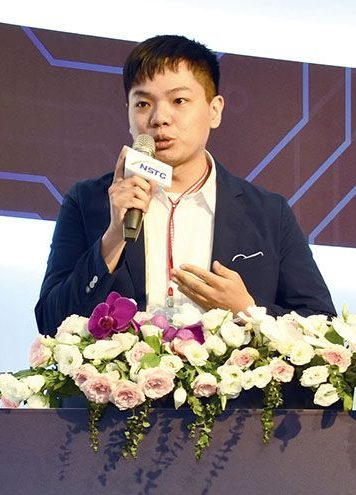

BIO + FLUMEN
百洑 Bioflumen
{{ site.data.home.blocks.about_2.zh }}
{{ site.data.home.blocks.about_2.en }}
NYCU · MICROFLUIDICS & BIOSENSING
張鈞豪博士Dr. Chun-Hao Chang · Assistant Professor
{{ site.data.home.hero_zh | escape | newline_to_br }}
{{ site.data.home.hero_en | escape | newline_to_br }}
01 / ABOUT THE LAB
BIO + FLUMEN
CROSS-DISCIPLINARY + SENSOR
RESEARCH APPROACH
02 / RESEARCH STORIES




01 / WEARABLE SAMPLING
Chemical Engineering Journal · 499, 155994
02 / SAMPLE PRETREATMENT
Sensors and Actuators B: Chemical · 394, 134356
03 / ON-SITE BIOSENSING
Biosensors and Bioelectronics · 236, 115403
04 / MATERIALS & FABRICATION
ACS Sustainable Chemistry & Engineering · 12, 4486–4496
03 / PRINCIPAL INVESTIGATOR

05 / TRAINING & COLLABORATION
06 / PUBLICATIONS
EXPLORE THE LAB
RESEARCH & COLLABORATION
{{ site.data.home.blocks.questions_1.zh }}
{{ site.data.home.blocks.questions_1.en }}
{{ site.data.home.blocks.questions_2.zh }}
{{ site.data.home.blocks.questions_2.en }}
{{ site.data.home.blocks.questions_3.zh }}
{{ site.data.home.blocks.questions_3.en }}
07 / CONTACT
研究討論、學生專題與跨領域合作，歡迎聯絡。For research discussions, student projects and interdisciplinary collaboration.
jimhao@nycu.edu.tw ↗